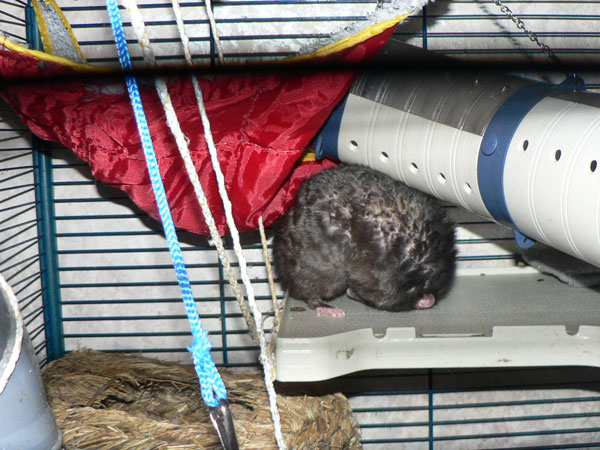
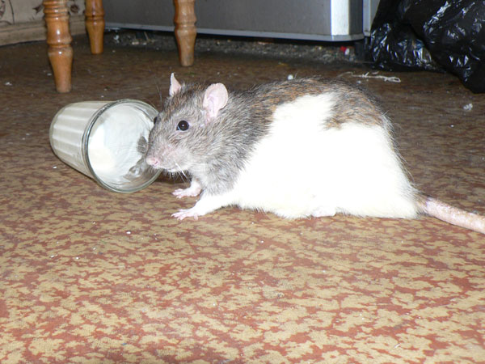
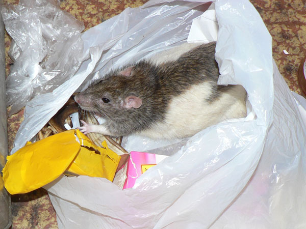
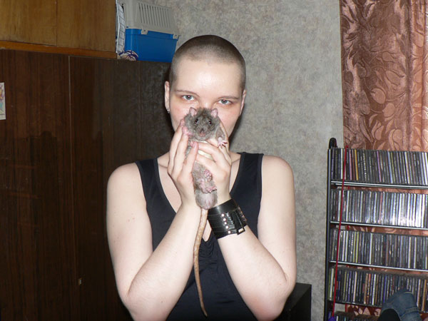
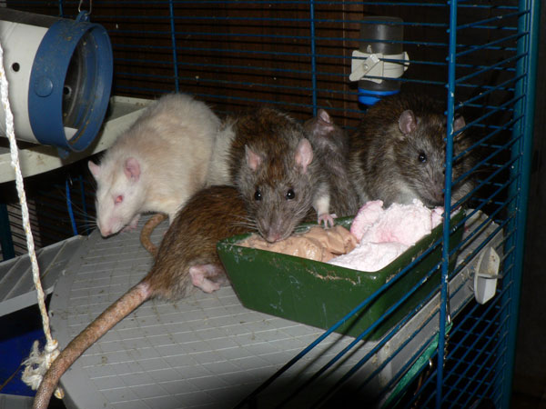
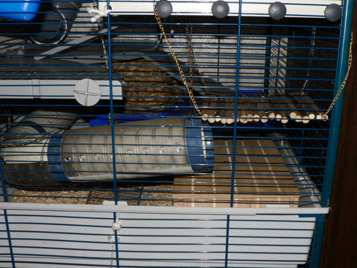
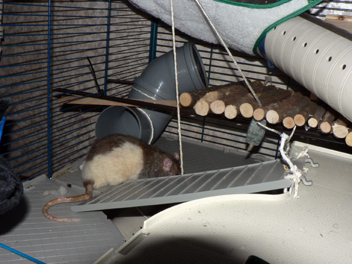
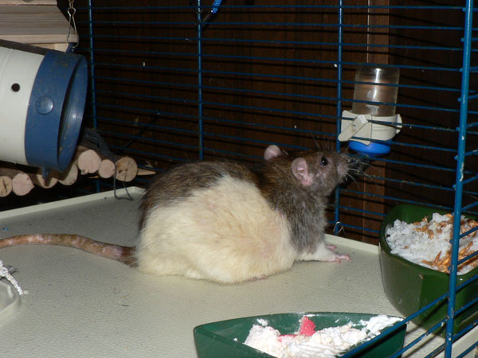
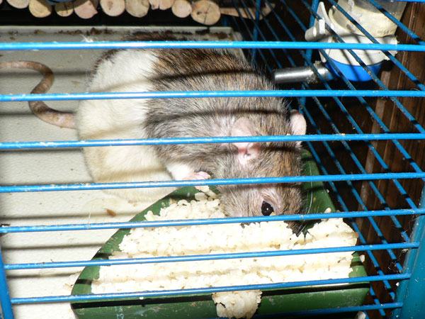

Май 2010

Сентябрь отдыхает.

Сентябрь решил, что лучше отдыхать, стоя на голове.

Дон Румата пришел на кухню, я ему дал стакан с кефиром.

Вот такой умный взгляд…

Полстакана уже облизано!

— Ну и закусить чем-то надо!

— А что вы на меня так смотрите?

— Смотри сюда: сейчас вылетит птичка летучая мышка!

— Видел?

Дон Румата посередине, Иннокентий в углу, Сосискин на подходе, а дон Рэба пытается отойти ко второй миске.

— И нечего толкаться. я из второй миски с Жориком поем..

Просто виды клетки — это верх.

Это — нижняя часть верха. Внизу справа — большой домик.

А это — верх, левая часть. И дон Румата.

Низ клетки, Сеня на заднем плане.

Дон Румата у поилки.

Жорик жрет йогурт.

Хитрый дон Румата разгребает рис и сразу есть что повкуснее на дне миски.